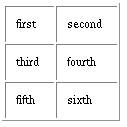

Component Description
A WOTable is a container element similar to a WORepetition
that repeats its contents (that is, everything between the <WEBOBJECT...>
and </WEBOBJECT...> tags in the template
file) a given number of times. It differs from a WORepetition in
that it displays the contents as a multi-column table. You can use
a WOTable to create dynamically generated banks of check boxes or
radio buttons. The WOTable displays the items in list from
left to right and wraps around to the next line when the number
of columns reaches maxColumns.

Synopsis
WOTable {list=anObjectList;
[item=anIteratedObject;] maxColumns=aNumber;
[index=aNumber;] [col=aNumber;]
[row=aNumber;] [tableBackgroundColor=hexString;]
[border=aNumber;] [cellpadding=aString;]
[cellspacing=aString;]
[rowBackgroundColor=hexString;]
[cellBackgroundColor=hexString;]
[cellAlign=aString;]
[cellVAlign=aString;] };
Bindings
- list
- Array of objects through which the WOTable iterates.
- item
- Current item in the list array. (This attribute's
value is updated with each iteration.)
- maxColumns
- Number of columns in the table.
- index
- Index of the current iteration of the WOTable. (This
attribute's value is updated with each iteration.)
- col
- Current column in the table. (This attribute's value
is updated with each iteration.)
-
row
- Current row in the table. (This attribute's value
is updated with each iteration.)
- tableBackgroundColor
- Specifies the background color of the table. This attribute
is passed to the
TABLE HTML
tag.
- border
- Specifies the width, in pixels, of the table border.
This attribute is passed to the
TABLE HTML tag.
- cellpadding
- Specifies the spacing between cells of the table. This
attribute is passed to the
TABLE HTML tag.
- cellspacing
- Specifies the spacing within cells of the table. This
attribute is passed to the
TABLE HTML
tag.
- rowBackgroundColor
- Specifies the background color for each row. This attribute
is passed to each
TR HTML
tag in the table.
- cellBackgroundColor
- Specifies the background color for the cells. This attribute
is passed to each
TD HTML
tag in the table.
- cellAlign
- Specifies the horizontal alignment of each cell. This
attribute is passed to each
TD HTML
tag in the table.
- cellVAlign
- Specifies the vertical alignment of each cell. This
attribute is passed to each
TD HTML
tag in the table.